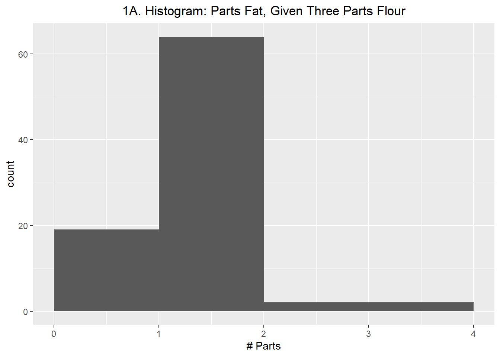
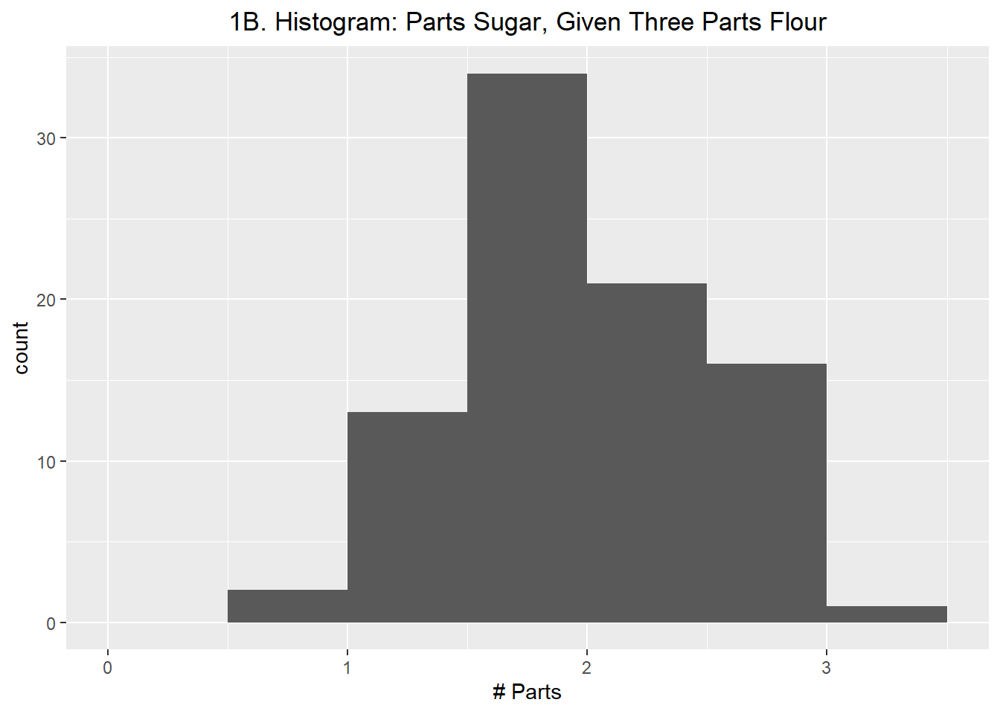
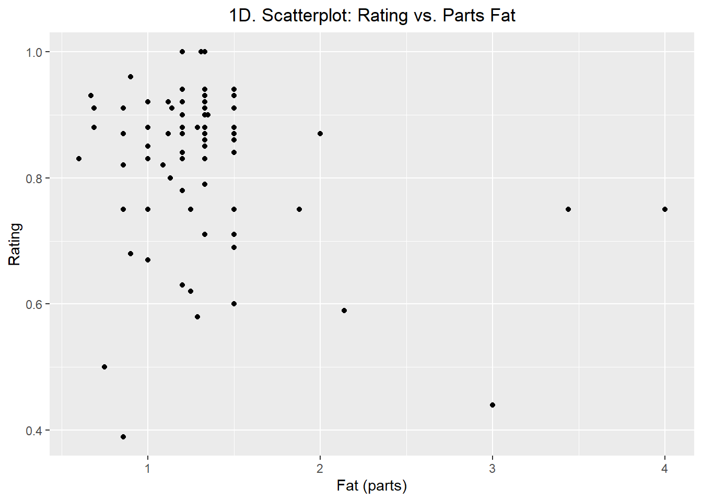
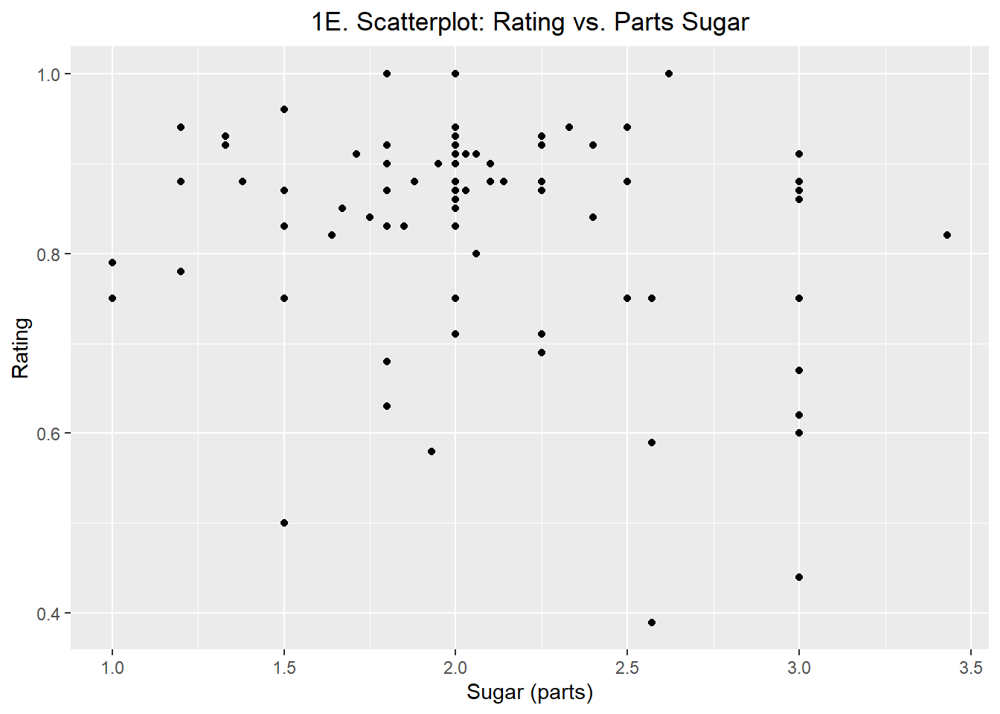
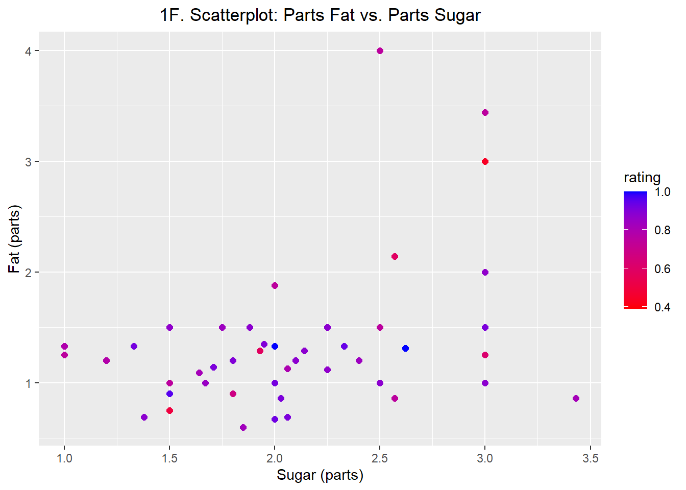

Baking is a game of chemistry, in which various ingredients engage in a number of chemical reactions to result in tasty desserts. But not all baking attempts end well. For example, if you use eggs straight from the fridge instead of allowing them to reach room temperature, cookie dough won’t aerate properly and the cookies might not be as fluffy as you desire.
When approaching the chemistry of a cookie, three of the main components are flour, fat, and sugar. Flour is a binding agent that provides structure and density. Fat adds flavor and influences the texture of a cookie; more fat increases chewiness, less fat increases crunchiness. Lastly, sugar provides taste and influences the tenderness and spread of a cookie.
A basic cookie ratio is 3:2:1- three parts flour, two parts fat, and one part sugar. As previously noted, flour predominantly serves as a binding agent, while fat and sugar can be manipulated to influence the taste and texture of a cookie.
Data Source
The dataset is composed of information about chocolate chip cookie recipes. The data was provided by Elle O’Brien in a GitHub repository. O’Brien details that the data was scraped from recipe databases AllRecipes and Epicurious, along with various other internet websites. The repository included a text file of the recipe instructions as well as a dataset containing information about the recipes’ ingredients and recipe ratings.
List of Features
Ingredient: The name of the ingredient
Text: The whole text description of the ingredient and the quantity (after scaling to 48 servings)
Recipe_Index: A tag used to label recipe sources
Rating: If a rating was available on the recipe, it is provided as a numeric value normalized to be between 0 and 1
Quantity: The scalar quantity of the ingredient, after scaling to 48 servings
Unit: The unit that the ingredient is measured in
Problem Framing
This analysis will explore the ratio of flour, fat, and sugar in chocolate chip cookie recipes: Does changing the amount of fat or sugar impact the rating of a chocolate chip cookie recipe?
Data Preparation
Preliminaries
First, the necessary libraries are imported, the dataset is loaded, and all column names are changed to snake case:
# load librarieslibrary(tidyverse, quietly=TRUE)
── Attaching core tidyverse packages ──────────────────────── tidyverse 2.0.0 ──
✔ dplyr 1.1.4 ✔ readr 2.1.5
✔ forcats 1.0.0 ✔ stringr 1.5.1
✔ ggplot2 3.5.0 ✔ tibble 3.2.1
✔ lubridate 1.9.3 ✔ tidyr 1.3.1
✔ purrr 1.0.2
── Conflicts ────────────────────────────────────────── tidyverse_conflicts() ──
✖ dplyr::filter() masks stats::filter()
✖ dplyr::lag() masks stats::lag()
ℹ Use the conflicted package (<http://conflicted.r-lib.org/>) to force all conflicts to become errors
library(janitor, quietly=TRUE)
Attaching package: 'janitor'
The following objects are masked from 'package:stats':
chisq.test, fisher.test
# make a copy of data for analysiscookie_analysis <- cookie_recipes_raw
# clean non-syntactic column names (snake-case is personal preference)cookie_analysis <- janitor::clean_names(cookie_analysis)
Initial data exploration is completed to evaluate any necessary cleaning and the relevant variables:
# view dataset headhead(cookie_analysis)
# A tibble: 6 × 7
x1 ingredient text recipe_index rating quantity unit
<dbl> <chr> <chr> <chr> <dbl> <dbl> <chr>
1 1 all purpose flour 3.0 cups all purpo… AR_1 0.921 3 cup
2 2 all purpose flour 2.8000000000000003… AR_10 0.905 2.8 cup
3 3 all purpose flour 1.1076923076923078… AR_101 0.6 1.11 cup
4 4 all purpose flour 3.333333333333333 … AR_102 0.938 3.33 cup
5 5 all purpose flour 2.0 cups all purpo… AR_103 0.881 2 cup
6 6 all purpose flour 9.0 cups unbleache… AR_107 0.927 9 cup
The head of the dataset reveals that the Text variable is redundant; the information in this column is broken out into a more usable format in the Ingredient, Quantity, and Unit variables.
This means that the only columns necessary for our analysis are recipe_index, quantity, unit, ingredient, and rating.
# select columns for analysiscookie_analysis <- cookie_analysis |>select(recipe_index, quantity, unit, ingredient, rating)
To prepare the dataset for flour-fat-sugar ratio analysis, ingredients are viewed and categorized:
# A tibble: 68 × 1
ingredient
<chr>
1 all purpose flour
2 almond extract
3 almonds
4 applesauce
5 baking powder
6 baking soda
7 bourbon
8 bread flour
9 brown rice flour
10 butter
# ℹ 58 more rows
# update data for flour-fat-sugar ratio analysisratio_analysis_incl_outliers <- cookie_analysis |>mutate(# classify ingredients as flour, fat, or sugarcategory =case_when(# anything that includes the string "flour" categorized as flourstr_detect(ingredient, "flour") ~"flour",# "wheat" categorized as flour ingredient =="wheat"~"flour",# can't use str_detect for "butter" bc "peanut butter" and "peanut butter chips" are included in data# anything that matches "butter", "shortening", "margarine", or "vegetable oil" categorized as fat ingredient %in%c("butter", "shortening", "margarine", "vegetable oil") ~"fat",# anything that includes the string "sugar" categorized as sugarstr_detect(ingredient, "sugar") ~"sugar",# anything that matches "corn syrup", "honey", "maple", or "molasses" categorized as sugar ingredient %in%c("corn syrup", "honey", "maple", "molasses") ~"sugar",TRUE~"unknown" ) )
Next, ingredients categorized as flour, fat, or sugar are reviewed to ensure the categories make sense:
# view ingredients that were categorizedratio_analysis_incl_outliers |>filter(category !="unknown") |>distinct(ingredient, category) |>arrange(category)
Upon review of the flour, fat, sugar, and unknown categories, the data is categorized properly and the dataset can be filtered to only include flour, fat, and sugar observations:
# filter to relevant observationsratio_analysis_incl_outliers <- ratio_analysis_incl_outliers |>filter(# only include categorized ingredients category %in%c("flour", "fat", "sugar"),# only include recipes with an associated rating!is.na(rating) )
To prepare data for ratio analysis, the units of measurement should be the same. Any non-cup units of measurement are converted to cups:
# view unique units of measurement across all types of ingredientsratio_analysis_incl_outliers |>distinct(unit)
# A tibble: 2 × 1
unit
<chr>
1 cup
2 tablespoon
# convert to single unit of measurementratio_analysis_incl_outliers <- ratio_analysis_incl_outliers |>mutate(# 16 tablespoons = 1 cupcups =ifelse(unit =="tablespoon", quantity /16, quantity) )
Some recipes include multiple types of flour, fat, and/or sugar, so the total volume (in cups) of each category is summarized:
# summarize cups by categorycups_by_category <- ratio_analysis_incl_outliers |># filter to columns used in analysisselect(recipe_index, cups, category, rating) |># group by recipe index and categorygroup_by(recipe_index, category) |># summarize sum of cups based on categorysummarise(cups =sum(cups),.groups ="drop_last" )
To view the information grouped by recipe, the data is pivoted into a wider format with recipes as the observations and each category (flour, fat, and sugar) as the columns:
Rows with any NA values were spot-checked and predominantly include recipes that are substituting one or more of the key recipe components for boxed cake or cookie mixes. This code has been omitted for clarity and conciseness.
Recipes using boxed mixes are not representative of the data I am interested in, so rows with NA values are omitted:
# update tibble for flour-fat-sugar ratiocups_by_category <- cups_by_category |># columns in flour-fat-sugar orderselect(recipe_index, cups_flour, cups_fat, cups_sugar) |># remove NA'sna.omit()
This analysis is interested in changes to the fat and sugar components in cookies, so the cups are converted to “parts” where flour is equal to three parts for all recipes:
# standardize cups_by_category to be parts_per_category based on 3 parts flour as the standardparts_by_category <- cups_by_category |>mutate(# create column for flour parts equal to 3.000parts_flour =round(3, 2),# compute the divisor necessary to convert cups_fat and cups_sugar to partsstandard_divisor = cups_flour /3,# convert cups_fat to parts_fatparts_fat =round((cups_fat / standard_divisor), 2),# convert cups_sugar to parts_sugarparts_sugar =round((cups_sugar / standard_divisor), 2), ) |>select(recipe_index, parts_flour, parts_fat, parts_sugar)
This analysis is interested in whether recipe rating changes based on the ratio of fat and/or sugar, so the ratings by recipe are summarized before merging them with the parts by category data:
# merge parts by category with ratingsratio_analysis_incl_outliers <-inner_join(parts_by_category, rating_by_recipe, by="recipe_index")# view tibbleratio_analysis_incl_outliers
For the purposes of this analysis, values are classified as outliers and removed if they are more than roughly three standard deviations away from from the mean.
Using a method of outlier removal that is less conservative than the 1.5(IQR) rule will allow us to better analyze whether relatively low or high amounts of fat or sugar in a recipe have a relationship with low or high ratings.
Flour is omitted from outlier considerations, given that all observations have a value of three parts.
Lower & Upper Limits Calculation
# compute lower and upper limits for parts_fatparts_fat_low <-quantile(ratio_analysis_incl_outliers$parts_fat, 0.0015)parts_fat_high <-quantile(ratio_analysis_incl_outliers$parts_fat, 0.9985)
# compute lower and upper limits for parts_sugarparts_sugar_low <-quantile(ratio_analysis_incl_outliers$parts_sugar, 0.0015)parts_sugar_high <-quantile(ratio_analysis_incl_outliers$parts_sugar, 0.9985)
# compute lower and upper limits for ratingrating_low <-quantile(ratio_analysis_incl_outliers$rating, 0.0015)rating_high <-quantile(ratio_analysis_incl_outliers$rating, 0.9985)
The variables are analyzed using visualizations and descriptive statistics to identify any trends or relationships between the parts fat, parts sugar, and ratings. Flour is omitted from the below analyses as it is held constant at a value of three parts.
Visual Analysis
First, histograms are plotted to identify any trends in the distribution of each variable’s values. Then, scatter plots are created to view the relationship between fat and sugar ratios and the recipe rating:
Plot 1A. Histogram: Parts Fat, Given Three Parts Flour
# view boxplot of parts_fatplot_1a <- ratio_analysis |>ggplot(aes(x=parts_fat)) +geom_histogram(binwidth=1.0,breaks=c(0.0, 1.0, 2.0, 3.0, 4.0) ) +labs(title="1A. Histogram: Parts Fat, Given Three Parts Flour",x="# Parts" ) +theme(plot.title=element_text(hjust=0.5))plot_1a

Plot 1A demonstrates that given 3.00 parts flour, most recipes use 1.00 to 2.00 parts fat. Recipes with 0.00 to 1.00 parts fat make up the second largest bin on the plot, indicating that the data is asymmetrical and right-skewed.
Plot 1B. Histogram: Parts Sugar, Given Three Parts Flour
# view boxplot of parts_sugarplot_1b <- ratio_analysis |>ggplot(aes(x=parts_sugar)) +geom_histogram(binwidth=0.5,breaks=c(0.0, 0.5, 1.0, 1.5, 2.0, 2.5, 3.0, 3.5) ) +labs(title="1B. Histogram: Parts Sugar, Given Three Parts Flour",x="# Parts" ) +theme(plot.title=element_text(hjust=0.5))plot_1b

Plot 1B demonstrates that given 3.00 parts flour, most recipes use between 1.50 and 2.00 parts sugar. The data indicates a relatively symmetrical distribution.
Plot 1C demonstrates that rating is a left-skewed distribution with most ratings between 0.75 and 1.00.
Plot 1D. Scatterplot: Rating vs. Parts Fat
plot_1d <- ratio_analysis |>ggplot(aes(x=parts_fat,y=rating )) +geom_point() +labs(title="1D. Scatterplot: Rating vs. Parts Fat",x="Fat (parts)",y="Rating" ) +theme(plot.title=element_text(hjust=0.5))plot_1d

Plot 1D demonstrates no visually discernible patterns based on the plotted points. A large range of ratings can be viewed for similar amounts of fat, indicating that there is not a relationship between rating and parts fat.
Plot 1E. Scatterplot: Rating vs. Parts Sugar
plot_1e <- ratio_analysis |>ggplot(aes(x=parts_sugar,y=rating )) +geom_point() +labs(title="1E. Scatterplot: Rating vs. Parts Sugar",x="Sugar (parts)",y="Rating" ) +theme(plot.title=element_text(hjust=0.5))plot_1e

Plot 1E demonstrates no visually discernible patterns based on the plotted points. A large range of ratings can be viewed for similar amounts of sugar, indicating that there is not a relationship between rating and parts sugar.
Plot 1F. Scatterplot: Parts Fat vs. Parts Sugar
plot_1f <- ratio_analysis |>ggplot(aes(x=parts_sugar,y=parts_fat,color=rating )) +geom_point(size=2) +labs(title="1F. Scatterplot: Parts Fat vs. Parts Sugar",x="Sugar (parts)",y="Fat (parts)" ) +scale_color_gradient(low="red", high="blue") +theme(plot.title=element_text(hjust=0.5))plot_1f

Plot 1F plots sugar and fat, with the points colored based on rating. The color legend shows a gradient where low ratings are red, mid ratings are purple, and high ratings are blue.
One notable observation is that none of the recipes in the dataset represent the 3:2:1 ratio of flour, fat, and sugar that is known as the basic cookie ratio, so all recipes in the dataset represent a deviation in the amount of fat and sugar.
Based on this plot, there are no discernible visual trends or patterns in the rating based on the combined fat and sugar information and there are a large range of ratings for similar fat and sugar ratios. This indicates that there is not a relationship between the ratio of flour, fat, and sugar to the rating of a cookie recipe.
Statistical Analysis
First, basic descriptive statistics are generated for all numeric variables. Second, the correlation between these variables is computed.
Basic Descriptive Statistics
summary(ratio_analysis)
recipe_index parts_flour parts_fat parts_sugar
Length:87 Min. :3 Min. :0.600 Min. :1.000
Class :character 1st Qu.:3 1st Qu.:1.125 1st Qu.:1.800
Mode :character Median :3 Median :1.330 Median :2.000
Mean :3 Mean :1.324 Mean :2.091
3rd Qu.:3 3rd Qu.:1.500 3rd Qu.:2.400
Max. :3 Max. :4.000 Max. :3.430
rating
Min. :0.390
1st Qu.:0.765
Median :0.870
Mean :0.831
3rd Qu.:0.910
Max. :1.000
Stats: Parts Fat
The minimum and 75th percentile demonstrate that the bottom 75% of the data has between 0.600 and 1.500 parts fat. The interquartile range shows that the middle 50% of the data is between 1.125 and 1.500 parts fat.
Inside of that range, the median and mean are very close (1.333 and 1.325, respectively), indicating that the effect of larger values such as the maximum of 4.000 have a limited impact on the mean, despite the asymmetry and skewness shown in Plot 1A.
Stats: Parts Sugar
The minimum and 75th percentile demonstrate that the bottom 75% of the data has between 1.000 and 2.400 parts sugar. The interquartile range shows that the middle 50% of the data is between 1.800 and 2.400 parts sugar.
Inside of that range, the median and mean are very close (2.000 and 2.091, respectively). In addition, the minimum and maximum are 1.000 and 1.429 parts sugar away from the median, respectively. This supports the relatively symmetrical distribution shown in Plot 1B.
Stats: Rating
The minimum and 75th percentile demonstrate that the bottom 75% of the recipes have a rating between 0.3857 and 0.9100. The interquartile range shows that the middle 50% of the recipes were rated 0.7673 to 0.9100.
Inside of that range, the median and mean are 0.8737 and 0.8307, respectively. Considering that the ratings are on a scale from zero to one, this difference indicates that lower values such as the minimum of 0.3857 did influence the mean. This supports the skewness noted in Plot 1C.
Correlation Matrix
A simple correlation matrix is viewed to assess the degree to which there is a linear relationship between the variables:
# prepare data for correlation matrixratio_analysis_numeric <- ratio_analysis |># set recipe_index as index in R column_to_rownames(var="recipe_index") |># select columns for correlation matrixselect(parts_fat, parts_sugar, rating)
Based on the matrix above, none of the variables have a strong correlation with the other variables. The correlation between parts fat and rating is -0.21 and the correlation between parts sugar and rating is -0.24.
Linear Regression Models
While the visualizations and statistics generated indicate that there is no relationship between the amount of fat or sugar in a recipe and the corresponding rating, linear regression models are generated and compared as a mental exercise.
Each model is assessed based on its t-values and adjusted R-squared values before the models are compared to each other based on adjusted R-squared and Akaike information criterion (AIC) values.
Fat Model
# generate model predicting rating based on parts fatfat_model <-lm(rating ~ parts_fat, data=ratio_analysis)
# view model summarysummary_fat <-summary(fat_model)summary_fat
Call:
lm(formula = rating ~ parts_fat, data = ratio_analysis)
Residuals:
Min 1Q Median 3Q Max
-0.46562 -0.04102 0.04239 0.07871 0.16928
Coefficients:
Estimate Std. Error t value Pr(>|t|)
(Intercept) 0.90119 0.03720 24.228 <2e-16 ***
parts_fat -0.05298 0.02633 -2.012 0.0474 *
---
Signif. codes: 0 '***' 0.001 '**' 0.01 '*' 0.05 '.' 0.1 ' ' 1
Residual standard error: 0.1209 on 85 degrees of freedom
Multiple R-squared: 0.04547, Adjusted R-squared: 0.03424
F-statistic: 4.049 on 1 and 85 DF, p-value: 0.04736
The fat model attempts to predict recipe rating based on the number of parts fat, given three parts of flour. The t-value of 0.052 indicates that the fat predictor is not significant, and the adjusted R-squared value of 0.03244 indicates that fat explains an extremely small amount of the variability observed in recipe ratings.
Sugar Model
# generate model predicting rating based on parts sugarsugar_model <-lm(rating ~ parts_sugar, data=ratio_analysis)
# view model summarysummary_sugar <-summary(sugar_model)summary_sugar
Call:
lm(formula = rating ~ parts_sugar, data = ratio_analysis)
Residuals:
Min 1Q Median 3Q Max
-0.41427 -0.05623 0.04389 0.07849 0.19852
Coefficients:
Estimate Std. Error t value Pr(>|t|)
(Intercept) 0.94784 0.05234 18.108 <2e-16 ***
parts_sugar -0.05586 0.02426 -2.302 0.0238 *
---
Signif. codes: 0 '***' 0.001 '**' 0.01 '*' 0.05 '.' 0.1 ' ' 1
Residual standard error: 0.1201 on 85 degrees of freedom
Multiple R-squared: 0.0587, Adjusted R-squared: 0.04762
F-statistic: 5.3 on 1 and 85 DF, p-value: 0.02376
The sugar model attempts to predict recipe rating based on the number of parts sugar, given three parts of flour. The t-value of 0.023 indicates that the sugar predictor is significant, but the adjusted R-squared value of 0.04827 indicates that sugar explains an extremely small amount of the variability observed in recipe ratings.
Fat & Sugar Model
# generate model predicting rating based on parts fat and parts sugarfat_sugar_model <-lm(rating ~ parts_fat + parts_sugar, data=ratio_analysis)
# view model summarysummary_fat_sugar <-summary(fat_sugar_model)summary_fat_sugar
Call:
lm(formula = rating ~ parts_fat + parts_sugar, data = ratio_analysis)
Residuals:
Min 1Q Median 3Q Max
-0.43705 -0.04806 0.03911 0.07392 0.19209
Coefficients:
Estimate Std. Error t value Pr(>|t|)
(Intercept) 0.97428 0.05554 17.541 <2e-16 ***
parts_fat -0.03757 0.02745 -1.369 0.1748
parts_sugar -0.04471 0.02548 -1.755 0.0829 .
---
Signif. codes: 0 '***' 0.001 '**' 0.01 '*' 0.05 '.' 0.1 ' ' 1
Residual standard error: 0.1195 on 84 degrees of freedom
Multiple R-squared: 0.07923, Adjusted R-squared: 0.0573
F-statistic: 3.614 on 2 and 84 DF, p-value: 0.03122
The fat & sugar model attempts to predict recipe rating based on the number of parts fat and parts sugar, given three parts of flour. The t-values of 0.1893 and 0.0783 indicates that the fat and sugar predictors are not considered significant, and the adjusted R-squared value of 0.05661 indicates that fat and sugar explain an extremely small amount of the variability observed in recipe ratings.
Model Comparison
# create vectors of model fit metrics for comparisonmodel <-c("fat", "sugar", "fat_sugar")adj_rsquared <-c(summary_fat$adj.r.squared, summary_sugar$adj.r.squared, summary_fat_sugar$adj.r.squared)aic <-c(AIC(fat_model), AIC(sugar_model), AIC(fat_sugar_model))
# create data frame summarizing model fit metrics for comparisonmodel_fit_comparison <-data.frame(model = model,adj_rsquared = adj_rsquared,aic = aic)
# view model fit metrics side-by-side for comparisonmodel_fit_comparison
Model fit is higher when the adjusted R-squared value is higher and the AIC is lower. Based on the above comparison table, the fat & sugar model has the highest adjusted R-squared value, while the fat model has the lowest AIC.
It should be noted that adjusted R-squared is overly simplistic and will naturally get higher as additional predictors are added. The AIC is a more nuanced measure of fit.
Notably, the adjusted R-squared values indicate that none of the models explain enough of the variability in recipe rating to be viable in predicting recipe rating.
Conclusion
Based on the visualizations, descriptive statistics, and models generated, changing the ratio of fat or sugar does not impact the overall rating of a cookie recipe.
The fat and sugar ratio in a recipe impacts the texture and taste of the resulting cookie and people have a wide variety of preferences when it comes to chewy vs. crisp cookies, as well as differing taste buds.
In conclusion, the ratios of fat and sugar are not good predictors of recipe rating. Baking may be a game of chemistry, but getting successful reviews is influenced by the individual preferences of the people consuming the desserts.
It is possible that studying cookie ratings with the subjects and recipes grouped by taste or texture preferences may reveal a greater correlation between baking ratios and recipe ratings.
References
The Culinary Pro. (n.d.). Cookies. https://www.theculinarypro.com/cookies
O’Brien, Elle. (2018, May 10). cookies. GitHub. https://github.com/the-pudding/data/tree/master/cookies